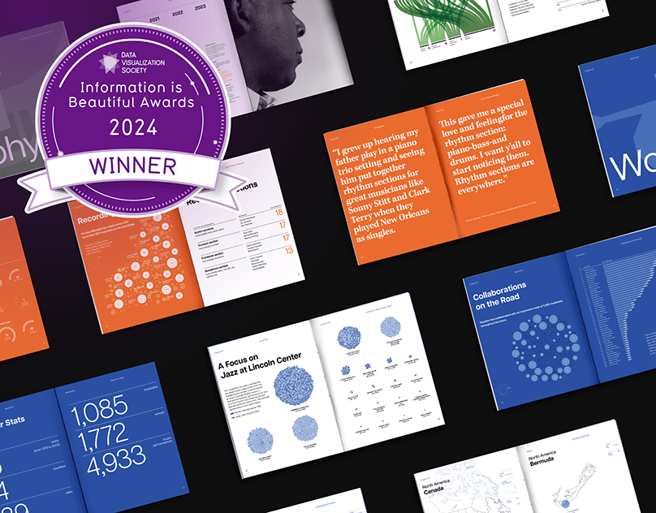
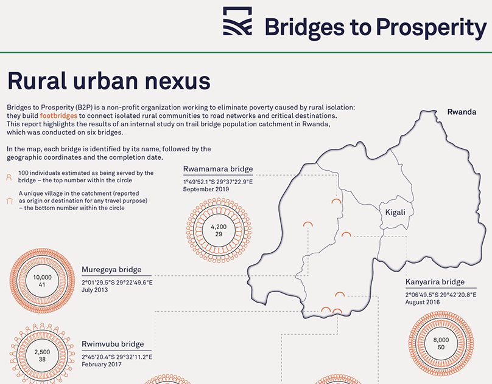
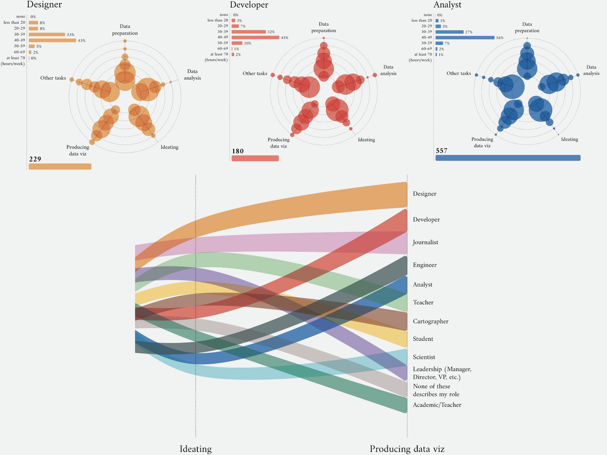
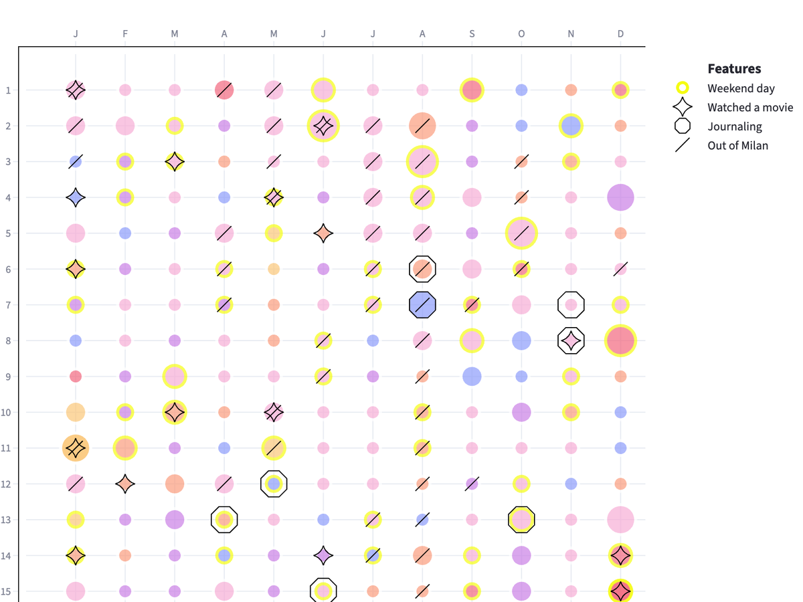
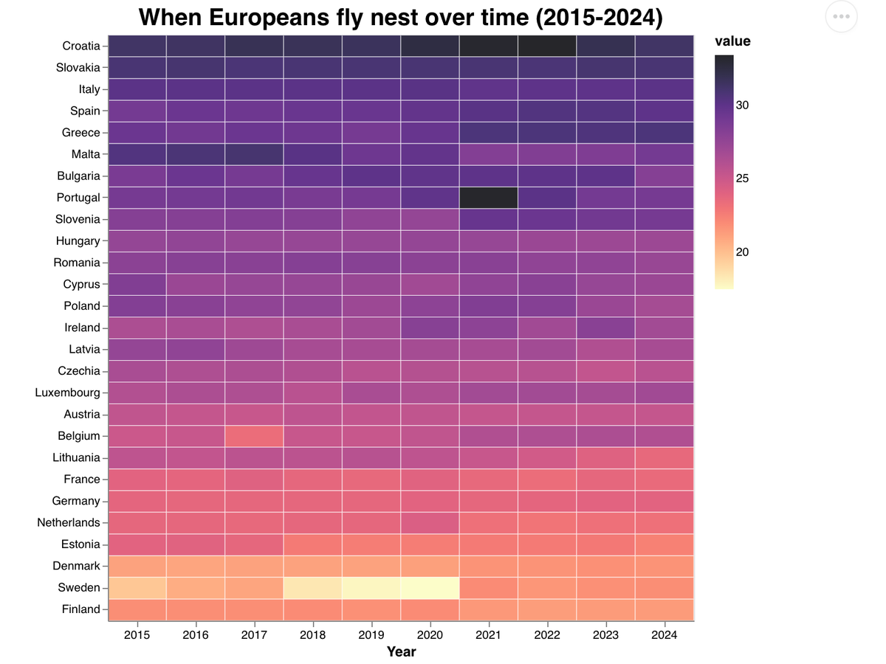
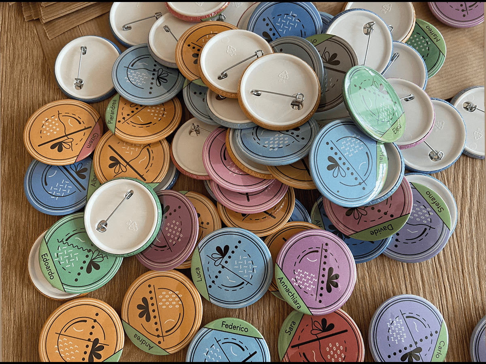
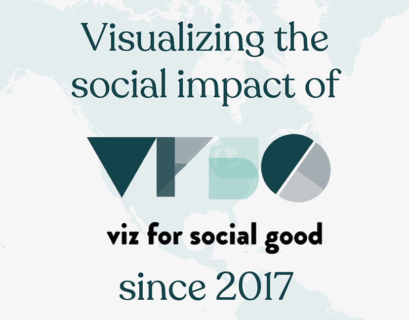
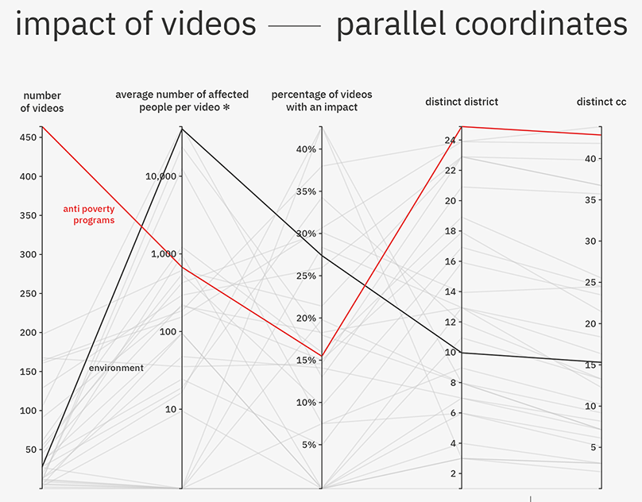

dataviz
Selected data visualization and information design projects, some award-winning. More on Behance and GitHub.

Beyond the Score
A book celebrating the 40-year career of jazz musician Wynton Marsalis, told through data visualization. With Emanuele Pizzuti.

Rural–urban nexus
For Viz for Social Good and Bridges to Prosperity, who build trail bridges connecting isolated communities to essential services. 2022.

A Matter of Time
How data visualization professionals with different job titles split their time across project phases, from the Data Visualization Society's survey.

Pixel year
A Streamlit web app visualizing a year of my personal data, collected daily in 2024: emotions (based on the emotion wheel), places, movies, migraines and more.

A Python dataviz makeover series
Redesigning charts I come across online, testing alternatives to find what works best for the data and context. Interactive marimo notebooks with the code included.

Data (Science) Pins
A Christmas gift for our Data Science team at work: a small survey, turned into one pin per colleague, with a legend to read them. Made with Riccardo and Sara. 2022.

Visualizing the social impact of VFSG
The impact of Viz for Social Good since its foundation. 2024.

Video Volunteers
For Viz for Social Good and Video Volunteers, which helps marginalized communities in India tell their stories and campaign for change. 2023.